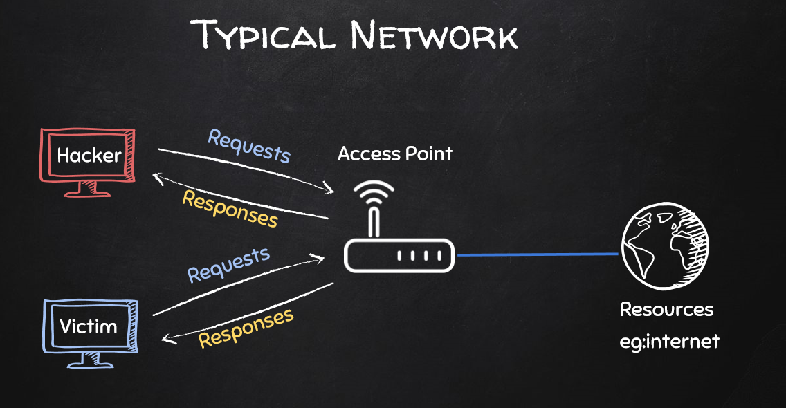
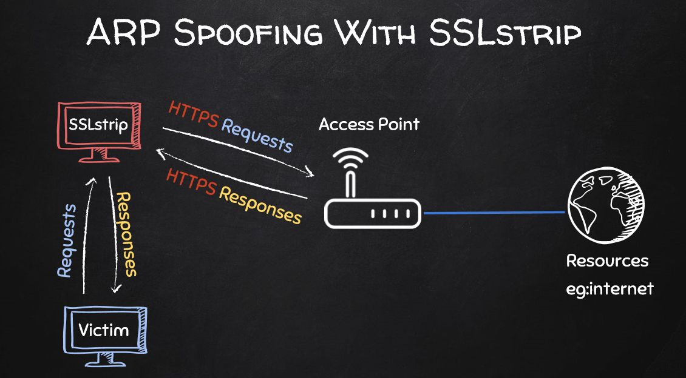
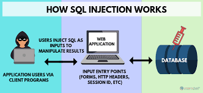

Types of attacks:
Some of the most common types of attacks/methods of penetrating into the system are listed below
1.Denial-of-service (DoS) and distributed denial-of-service (DDoS) attacks
Sending heavy network traffic to server in order to slow them down. This makes computer or other device unavailable to its intended users by interrupting the device's normal functioning.
Resources : Here
Notable event : On September 6 and 7, 2019, Wikipedia was taken down by a DDoS attack in Germany and some parts of Europe. Social media users, while waiting for the Wikipedia recovery, created a hashtag #WikipediaDown on Twitter in an effort to draw public attention
In case of distributed denial of service attack, heavy traffic will be sent from several computers.
Resources : Here
Notable event : On September 6 and 7, 2019, Wikipedia was taken down by a DDoS attack in Germany and some parts of Europe. Social media users, while waiting for the Wikipedia recovery, created a hashtag #WikipediaDown on Twitter in an effort to draw public attention
In case of distributed denial of service attack, heavy traffic will be sent from several computers.
2.Man-in-the-middle (MitM) attack


A man-in-the-middle attack requires three players. There’s the victim, the entity with which the victim is trying to communicate, and the “man in the middle,” who’s intercepting the victim’s communications. Critical to the scenario is that the victim isn’t aware of the man in the middle.
Once the hacker becomes the MITM he has perform several actions like reading the login credentials of the victim but trapping his packets, send malwares, send fake login pages, redirect the victim to phishing websites even for legitimate request, downgrading all HTTPS requests to HTTP request. One of the method of becoming MITM is by ARP Spoofing
Resources : Here
Once the hacker becomes the MITM he has perform several actions like reading the login credentials of the victim but trapping his packets, send malwares, send fake login pages, redirect the victim to phishing websites even for legitimate request, downgrading all HTTPS requests to HTTP request. One of the method of becoming MITM is by ARP Spoofing
Resources : Here
Packet Sniffing :
Once the hacker becomes man in the middle, all the network traffic between the victim and the router flows through him. He will be able to capture / create a copy of the packet of the packets and then extract useful information from them like login credentials and all get info about the websites visited by the user. All this is possible only for HTTP, UDP, DNS, FDP requests. It is not possible in HTTPS request because there is a extra layer of security(contents are encrypted). So hacker will not be able to read the contents of the packets.DNS Spoofing :
In DNS spoofing, the hacker will be able to redirect the user’s request to another website For eg : Assume the user wants to visit the www.bing.com but the hacker can modify the packet and make the victim redirect to www.google.com. Using this method hackers can redirect users to phishing pages.HTTPS Downgrading:
 One known fact is that all the websites having HTTPS page have HTTP page. Assume user wants to visit for www.bbc.com , so the user computer will make a initial request to HTTP page of bbc.com. If the HTTPS is available then the DNS server will respond saying that hey I have a HTTPS page, why don’t you use that. The user computer will accept that and receive the HTTPS page so that they can share info in secret fashion. So the hacker will not be able to read the info. the hacker in this case the MITM will downgrade the received HTTPS request to HTTP request and then send them to victim. The responses from vinctim is received as HTTP and converts it to HTTPS and send that to the router.3. SQL injection attack

SQL Injection (SQLi) is a type of an injection attack that makes it possible to execute malicious SQL statements. These statements control a database server behind a web application. Attackers can use SQL Injection vulnerabilities to bypass application security measures.
Resources : Here
Resources : Here
4. Cross-site scripting (XSS) attack

It is the ability to inject javascript code into webpages
It is of three types :
Stored XSS : where the malicious input originates from the website's database.
Reflected XSS, where the malicious input originates from the victim's request.
DOM-based XSS, where the vulnerability is in the client-side code rather than the server-side code.
Resources : Here
It is of three types :
Stored XSS : where the malicious input originates from the website's database.
Reflected XSS, where the malicious input originates from the victim's request.
DOM-based XSS, where the vulnerability is in the client-side code rather than the server-side code.
Resources : Here
5. Malwares
These are the files with evil/malicious code.
These two methods come under social engineering
Resources : Here
Resources : Here
 As the same says, it gives an extra door for your home (ie) the computer. It is usually a script been executed on the victim computer who must have been social enginnered to execute that script. As a result of executing the script, the victim’s computer will connect back to the hackers system. Now, the reverse connection Is established and the hacker can execute system commands, use the webcam, can send messages on behalf of victim, see the contents of your system, delete them modify them and literally can do anything on the victim’s system.
As the same says, it gives an extra door for your home (ie) the computer. It is usually a script been executed on the victim computer who must have been social enginnered to execute that script. As a result of executing the script, the victim’s computer will connect back to the hackers system. Now, the reverse connection Is established and the hacker can execute system commands, use the webcam, can send messages on behalf of victim, see the contents of your system, delete them modify them and literally can do anything on the victim’s system.
Resources : Here
Resources : Here
Backdoors
As the same says, it gives an extra door for your home (ie) the computer. It is usually a script been executed on the victim computer who must have been social enginnered to execute that script. As a result of executing the script, the victim’s computer will connect back to the hackers system. Now, the reverse connection Is established and the hacker can execute system commands, use the webcam, can send messages on behalf of victim, see the contents of your system, delete them modify them and literally can do anything on the victim’s system.